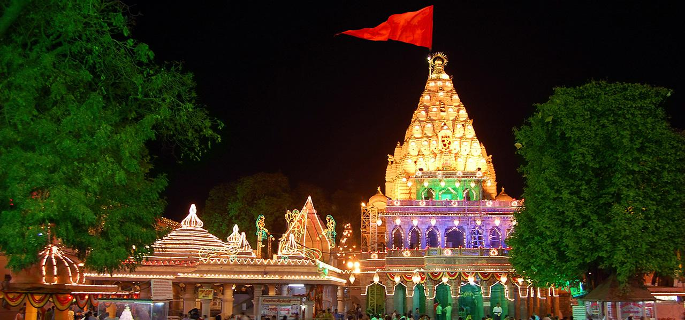

उज्जैन के मुख्य पर्व, धार्मिक एवं ऐतिहासिक स्थल
महाकालेश्वर ज्योतिर्लिंग
आकाशे तारकं लिंगं, पाताले हाटकेश्वरम्।
मृत्युलोके च महाकालौ: लिंगत्रय नमोस्तुते।।
अर्थात् ब्रह्मांड में सर्वपूज्य माने गए तीनों लिंगों में भूलोक में स्थित भगवान महाकाल प्रधान हैं।
12 ज्योतिर्लिंगों में इनकी गणना होती है। उज्जैन के प्रथम और शाश्वत शासक भी महाराजाधिराज श्री महाकाल ही हैं, तभी तो उज्जैन को महाकाल की नगरी कहा जाता है।
दक्षिणमुखी होने से इनका विशेष तांत्रिक महत्व भी है। ये कालचक्र के प्रवर्तक हैं तथा भक्तों की मनोकामनाओं को पूर्ण करने वाले बाबा महाकालेश्वर
के दर्शन मात्र से ही प्राणिमात्र की काल मृत्यु से रक्षा होती है, ऐसी शास्त्रों की मान्यता है।
भारत के नाभिस्थल में, कर्क रेखा पर स्थित श्री महाकाल का वर्णन रामायण, महाभारत आदि पुराणों एवं संस्कृत साहित्य के अनेक काव्य ग्रंथों में प्रचुर मात्रा में उपलब्ध है।
कहा जाता है कि इस अतिप्राचीन मंदिर का जीर्णोद्धार राजा भोज के पुत्र उदयादित्य ने करवाया था।
उसके पश्चात पुन: जीर्ण होने पर 1734 में तत्कालीन दीवान रामचन्द्रराव शेणवी ने इसका फिर से जीर्णोद्धार करवाया।
मंदिर के तल मंजिल पर महाकाल का विशाल लिंग स्थित है जिसकी जलाधारी का मुख पूर्व की ओर है।
साथ ही पहली मंजिल पर ओंकारेश्वर तथा दूसरी मंजिल पर नागचन्द्रेश्वर की प्रतिमाएं स्थित हैं।
स्मरण रहे कि भगवान नागचन्द्रेश्वर के दर्शन वर्ष में केवल 1 ही बार, अर्थात नागपंचमी पर होते हैं।
महाकाल के दक्षिण में वृद्धकालेश्वर, अनादि कल्पेश्वर तथा सप्तऋषियों के मंदिर स्थित हैं, जबकि इसके उत्तर में चन्द्रादित्येश्वर, देवी अवन्तिका, बृहस्पतेश्वर,
स्वप्नेश्वर तथा समर्थ रामदास द्वारा स्थापित श्री हनुमानजी का मंदिर है। इसके पश्चिम में कौटितीर्थ नामक कुंड है एवं समीप ही रुद्र-सरोवर भी स्थित है।

पूरे भारतवर्ष में यह एकमात्र ज्योतिर्लिंग है, जहां ताजी चिताभस्म से प्रात: 4 बजे भस्म आरती होती है।
उस समय पूरा वातावरण अत्यंत मनोहारी एवं शिवमय हो जाता है।
श्रावण मास तथा महाशिवरात्रि के अवसर पर यहां पर विशेष उत्सव होते हैं। श्रावण मास के प्रत्येक सोमवार को महाराजाधिराज महाकालेश्वर की सवारी निकाली जाती है।
पूरे शहर को इस अवसर पर वंदनवारों एवं विद्युत बल्बों से सजाया जाता है।
यह सवारी मंदिर प्रांगण से निकलकर शिप्रा तट तक जाती है। देश के कोने-कोने से लोग महाकाल के दर्शन हेतु उज्जैन आते रहते हैं।
महापर्वों एवं विशेष अवसरों पर भीड़ अधिक होती है। इस ज्योतिर्लिंग की विशेषता यह है कि मुस्लिम समुदाय के बैंड-बाजे वाले भी श्री महाकाल की
सवारी में अपना नि:शुल्क योगदान देते हैं। यह हिन्दू-मुस्लिम सौहार्द का अनूठा उदाहरण है।